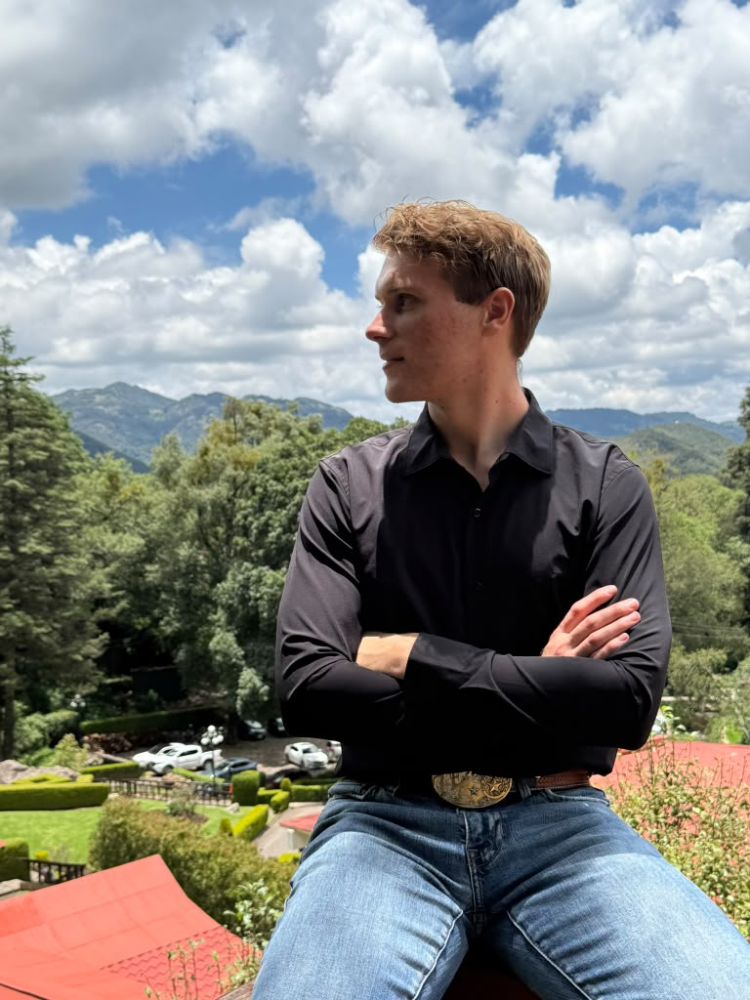

Taylor Lee Kirby | WDD 130

Hi my name is Taylor. I am 23 years old and I am originally from Austin, Texas. I am currently living in Mexico with my wife and I love to travel and do new things. I am studying web design and development through BYU pathways. I like try new things and I can't wait to see how learning this can bless my life.